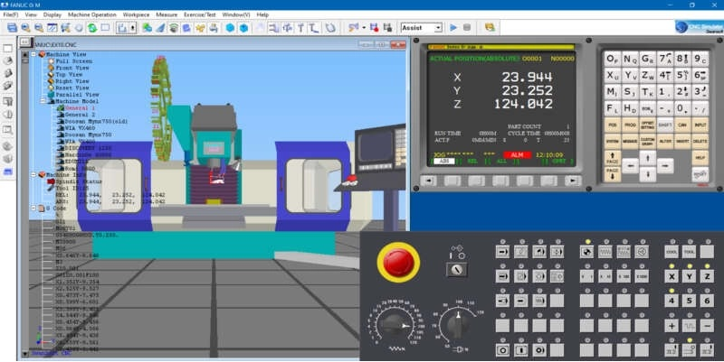
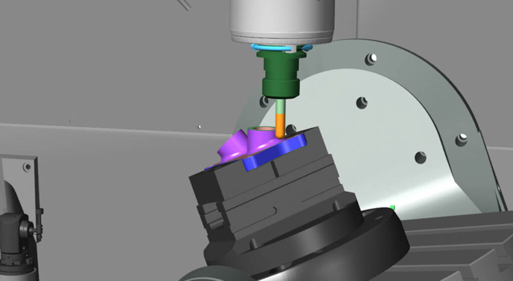
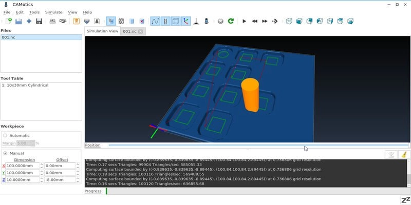
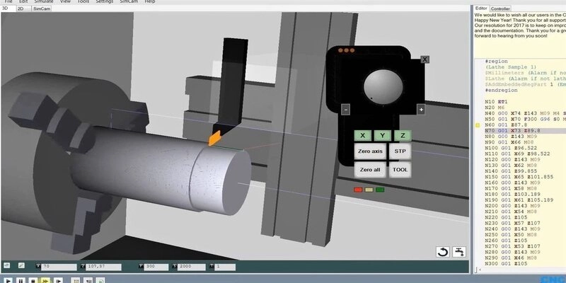
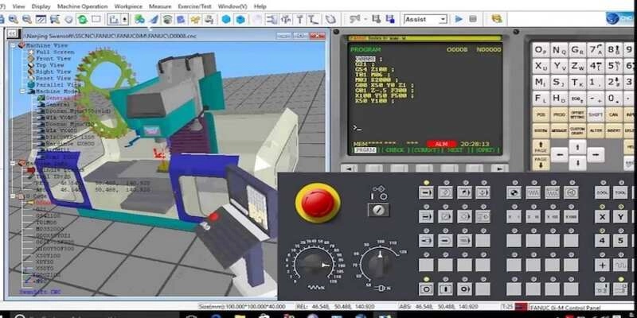
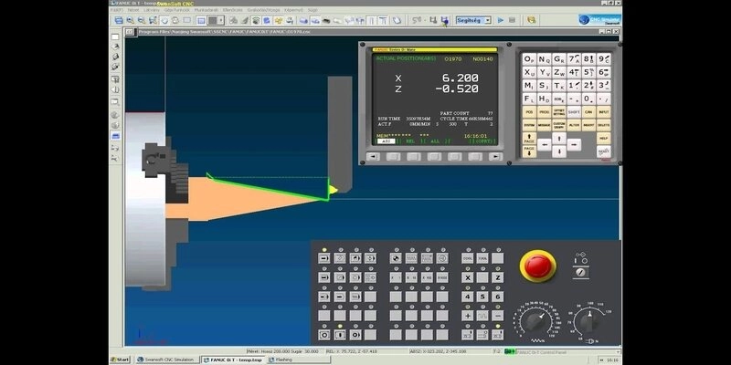

Симулятор ЧПУ верстата. Найкращі безкоштовні та платні програми

Висока точність — основа успіху в ЧПУ-обробці. Найменші помилки можуть зіпсувати проєкт, тому важливо ретельно підготуватися перед початком роботи, незалежно від типу обладнання: чи то фрезерний верстат, токарний, лазерний чи інший ЧПУ-інструмент. Щоб забезпечити цю підготовку, багато професіоналів та новачків використовують симулятор ЧПУ верстата.
Симулятор ЧПУ незамінний: він дозволяє тестувати проєкти, мінімізуючи ризик пошкодження заготовки або неправильного нанесення розмітки. Але який симулятор вибрати? У цьому огляді ми розглянемо найкращі безкоштовні та платні рішення для різних завдань і рівнів підготовки.
Крім того, ми пропонуємо ознайомитися з нашим посібником щодо вибору найкращого ПЗ для ЧПУ, а також популярних програм для CAM та CAD систем, необхідних для розробки та програмування маршрутів G-коду.
Основні відомості про симулятори ЧПУ
Симулятор ЧПУ є програмним забезпеченням для моделювання G-коду та траєкторії інструмента, що дозволяє прогнозувати, як проходитиме обробка. За допомогою цих програм можна створити тривимірні візуалізації операцій, оцінити результат і виявити потенційні помилки, уникнувши пошкоджень заготовки.

Основна перевага симуляторів — можливість виявляти неточності в G-коді без ризику для матеріалу. Це не лише підвищує точність, а й дозволяє заощаджувати кошти та час, роблячи процес обробки продуктивнішим.
Симулятори також широко використовуються в навчальних закладах і на виробництві для навчання студентів та співробітників. В умовах пандемії COVID вони особливо корисні, оскільки надають можливість віддаленого навчання та практики.
Більшість симуляторів підходять для моделювання операцій із різними типами верстатів, такими як ЧПУ-верстати, токарні, лазерні різаки та 3D-принтери.
Крім того, деякі програми дозволяють не лише моделювати, а й редагувати G-код. У деякі також вбудовані функції CAM та CAD.
Найкращі безкоштовні симулятори ЧПУ
CAMotics — потужний безкоштовний симулятор

CAMotics — це популярний симулятор з відкритим вихідним кодом для Windows, Mac и Linux. Він дозволяє моделювати 3-осьові програми та підтримує різні типи інструментів.
Найкращі платні симулятори ЧПУ
CNCSimulator Pro — комплексне рішення з CAD/CAM функціями

CNCSimulator Pro підходить для 3D-візуалізації та роботи з різними типами верстатів, включаючи токарні та 3D-принтери. Це ПЗ оснащене функціями для створення та моделювання деталей.
Fanuc CNC Machining Simulation — Удосконалений симулятор з 5-осьовою підтримкою

У той час як Fanuc CNC Simulator призначений для навчання, Fanuc CNC Machining Simulation орієнтований на професіоналів, пропонуючи функціональність для поглибленого моделювання. Програма підтримує симуляцію операцій на 3- та 5-осьових фрезерних верстатах, а також на 2-осьових токарних верстатах.
Варіанти придбання включають: базовий пакет для навчання, розширений комплект для виробничих умов та 5-осьове розширення. Зв'яжіться з відділом продажу Fanuc, щоб вибрати відповідний пакет, який відповідає вашим завданням і бюджету.
Однією з ключових переваг є функція 5-осьового фрезерного моделювання. Моделювання та візуалізація коду для 5-осьових операцій допомагає впоратися зі складністю їх налаштування та параметрів, що робить цей інструмент незамінним для точної та ефективної обробки.
Також до комплекту входить Fanuc Manual Guide i — інтерфейс для діалогового програмування, який ідеально підходить для практичного навчання програмуванню прямо на виробництві.
Nanjing Swansoft Machine Simulator — чудовий вибір для професіоналів і студентів

Nanjing Swansoft Machine Simulator, розроблений SSMAC, є одним із найфункціональніших симуляторів ЧПУ для навчання та професійного використання.
Цей інструмент затребуваний серед студентів і професіоналів, пропонуючи різноманітні можливості для освітніх закладів. Викладачі можуть моделювати несправності, які потім учні повинні усувати, а результати відстежуються через сервер SSMAC.
Симулятор підтримує системи Fanuc, Siemens і NHC, а також симулирует токарні та фрезерні операції. Завдяки 2D та 3D графиці, він детально відображає операції ЧПУ, аналізує несправності й наглядно демонструє принципи роботи електричних систем та других процессов.
Крім того, це больше, чем симулятор — з функціями CAD для рендеринга та моделювання, можна розробляти проєкти та тестувати їх обробку.
Простий та інтуїтивний інтерфейс робить цей симулятор придатним для початківців.